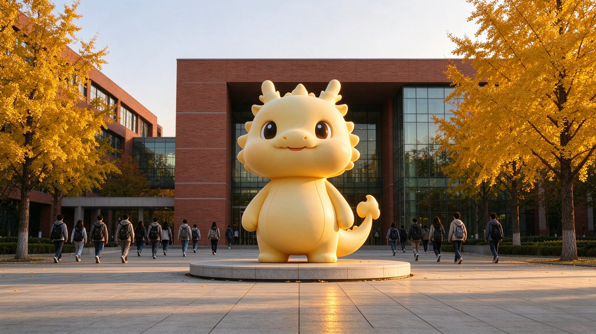
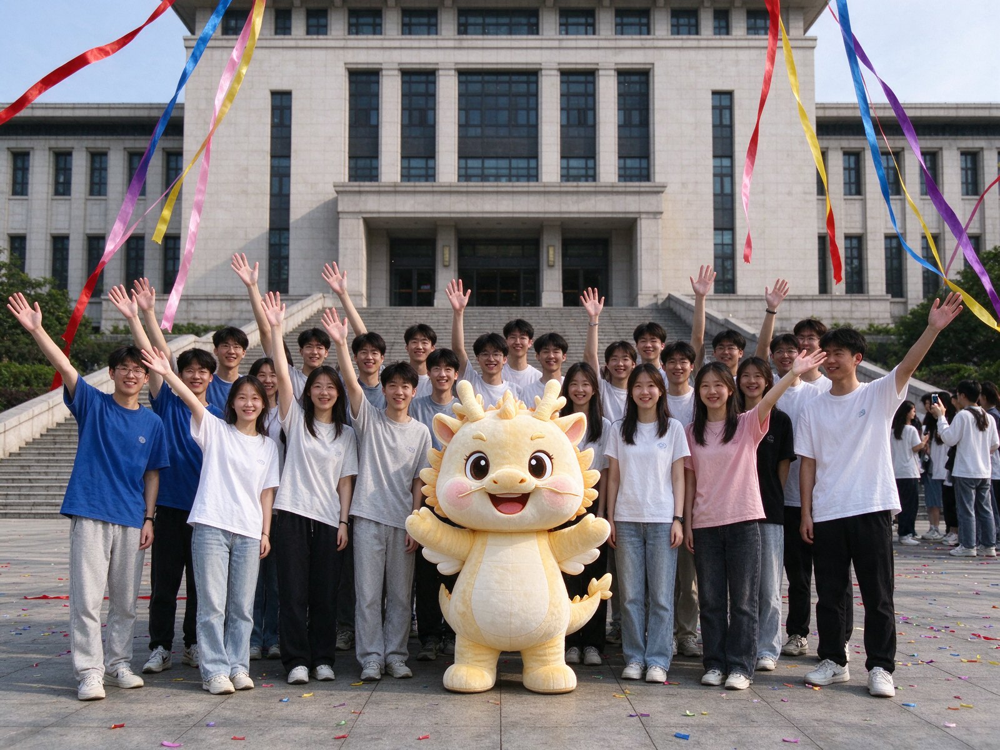
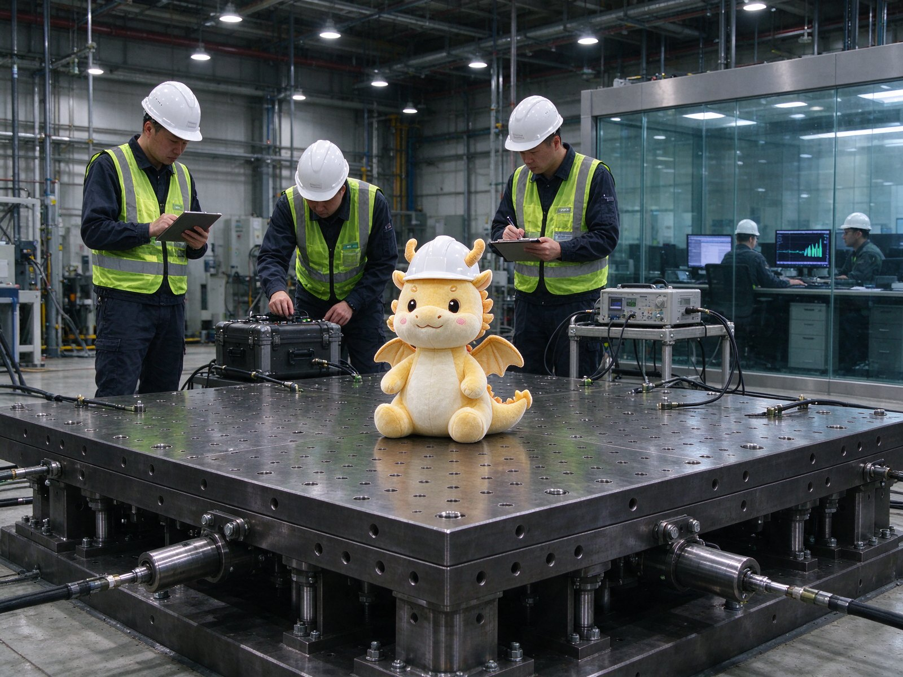
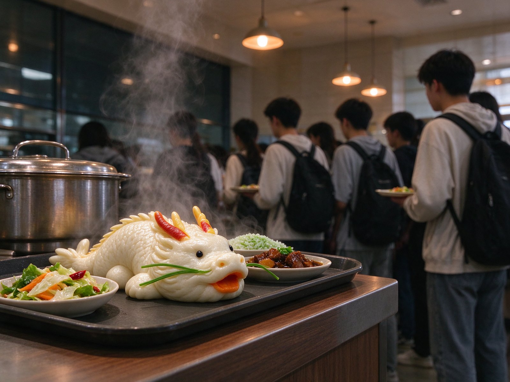
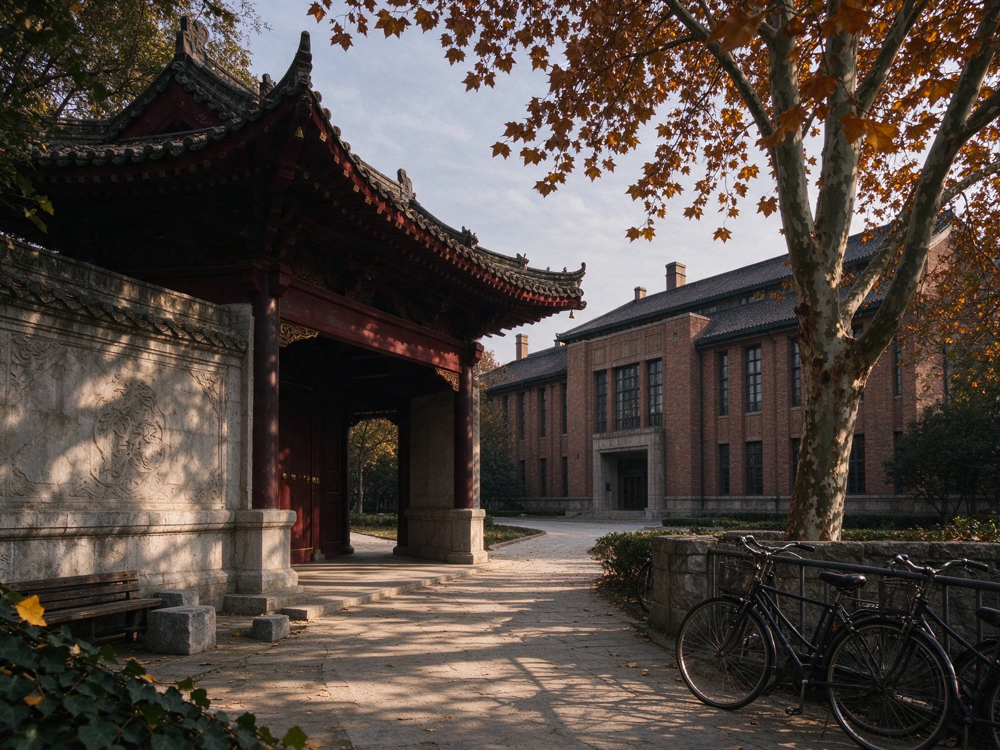
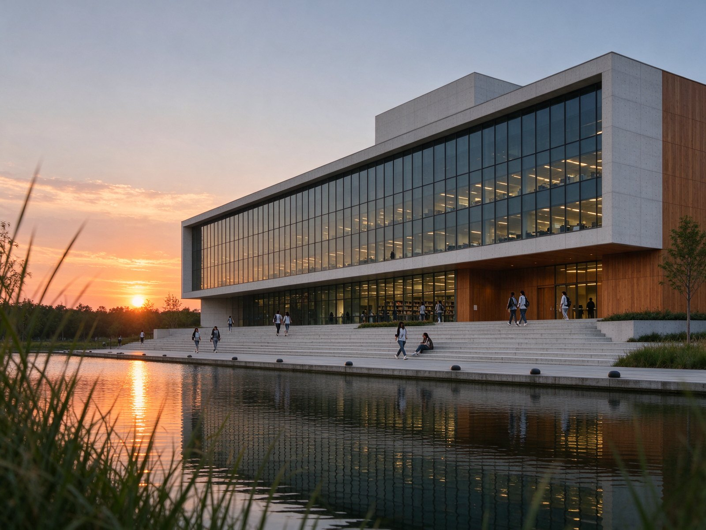
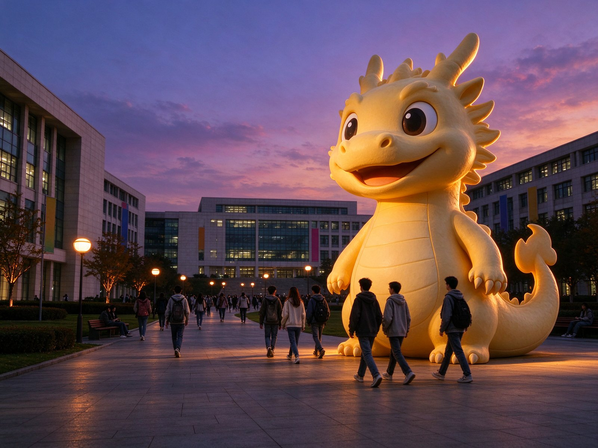

01
建筑与城市规划学院
把奶龙画进城市天际线。

ABOUT · 01
北建奶龙大学以北京建筑大学为灵感，保留真实的校史、校训与学科底色，把奶龙放进校园日常。以下事实均可回到真实学校官网核对。
学校源于 1907 年，2013 年更名为北京建筑大学。建筑学、土木工程、测绘科学与技术是北京高校高精尖学科，建筑遗产保护、城乡规划与建筑设计、海绵城市、精密测绘、智能建造、绿色建筑等方向形成了鲜明特色。
从天安门城楼修缮、大兴机场航站楼钢结构关键技术，到冬奥会开闭幕式专项与雄安新区建设规划，北建大人的工作一直发生在真实城市里。现在，校园里多了一只奶龙，它主要负责在图纸旁边安静地看。
「1 只常驻奶龙」为趣味设定；其余数据来自北京建筑大学官网。官网口径为 11 个学院和 1 个基础教学单位，下方名单同时列出未来建筑技术学院、卓越工程师学院等教学单位。
SCHOOLS · 02
真实学院名称，加上一句奶龙化简介。官网口径为 11 个学院和 1 个基础教学单位，下方同时列出其他教学单位。
01
把奶龙画进城市天际线。
02
让每一只奶龙都站得稳。
03
给奶龙一口好空气。
04
教奶龙写第一行代码。
05
在校园里精准找到奶龙。
06
算清奶龙的伙食预算。
未来建筑技术学院、卓越工程师学院、建筑与城市规划学院、土木与交通工程学院、环境与能源工程学院、智能科学与技术学院、城市经济与管理学院、测绘与城市空间信息学院、机电与车辆工程学院、人文与社会科学学院、理学院、马克思主义学院、体育教研部、继续教育学院、国际教育学院。
NEWS & STORIES · 03
六条校园新闻，三个分类。所有故事均为趣味虚构。
共 6 条

以好奇为起点，以食堂为圆心。我们的大学生活，从这一页开始。

测试结论：晃是可以晃的，肚子不能瘪。

建议错峰用餐，或和奶龙一起再等五分钟。

它不画图，只在图纸旁边点头；据说点头通过率很高。

题目是：如何为一只喜欢发呆的龙设计一座城市广场。

不规定每分钟的产出，也欢迎暂时没有答案。
NOTICES · 04
WHAT'S ON · 05
10 / 24
通识教育中心 · 西城校区报告厅 · 14:00–16:00
10 / 30
约 30 公里 · 建议坐校车 · 09:00 出发
LIFE ON CAMPUS · 06
点击卡片，看看两个真实校区和一座虚构广场。
YOUR STORY · 07
填一个昵称，选一个学院，在浏览器本地生成一张入学纪念卡。不上传、不注册、不存储。
填写昵称并点击「生成纪念卡」，这里会出现你的卡片。
GOOD TO KNOW · 08
不是。本站为「北建奶龙大学」粉丝趣味二创，与北京建筑大学无隶属关系。真实学校信息请访问 北京建筑大学官网。
不会。本站不提供任何真实招生、缴费、学籍或学位服务，也不接受任何形式的费用。
不会。昵称只在浏览器本地用于生成 SVG，不上传、不存储，关闭页面后不会保留。
均无隶属或合作关系。本站为非商业娱乐创作，相关校名、校徽、校园影像与奶龙形象权利归各自权利人所有。